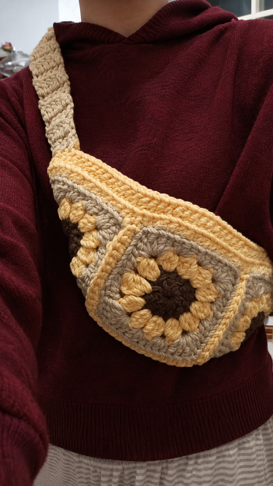
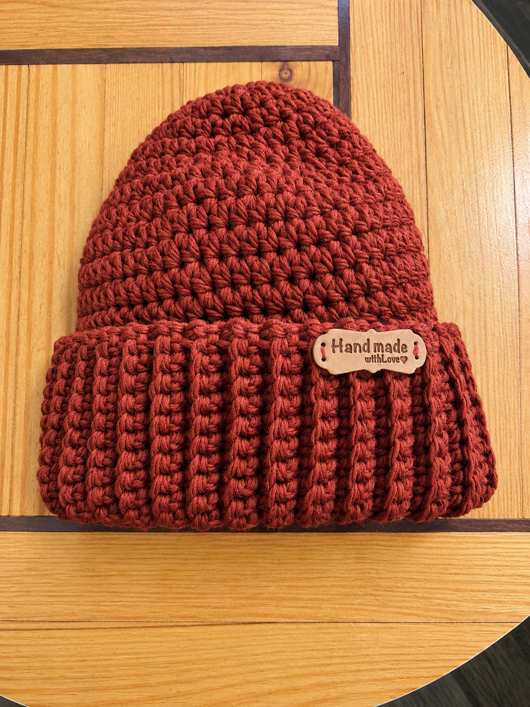
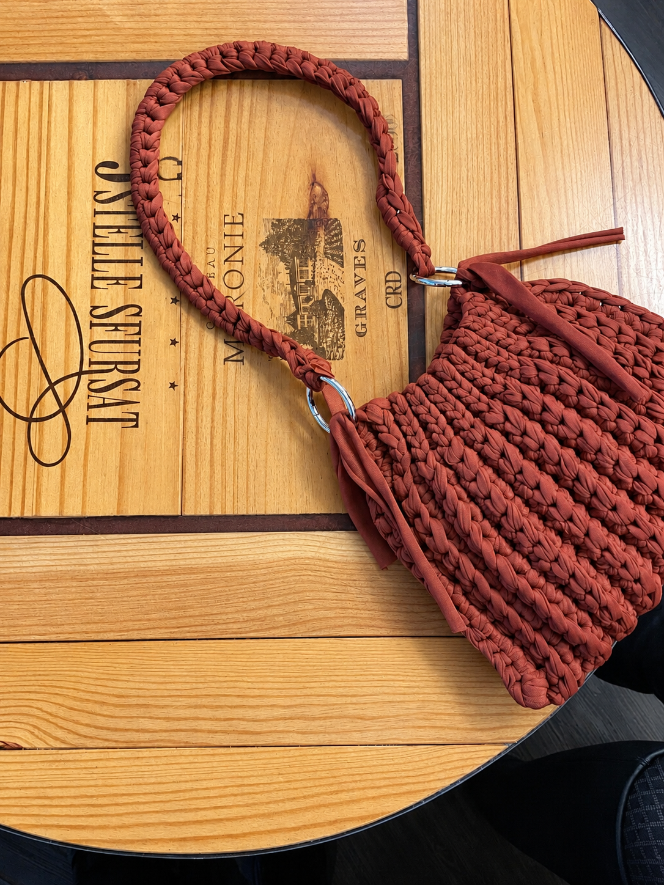
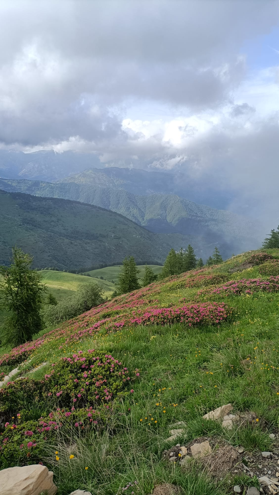
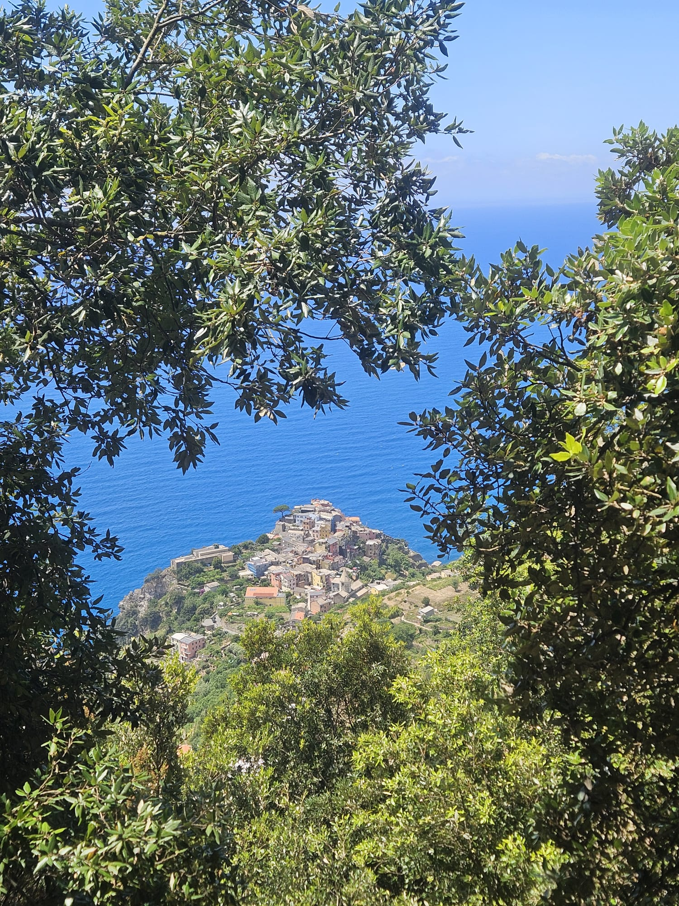
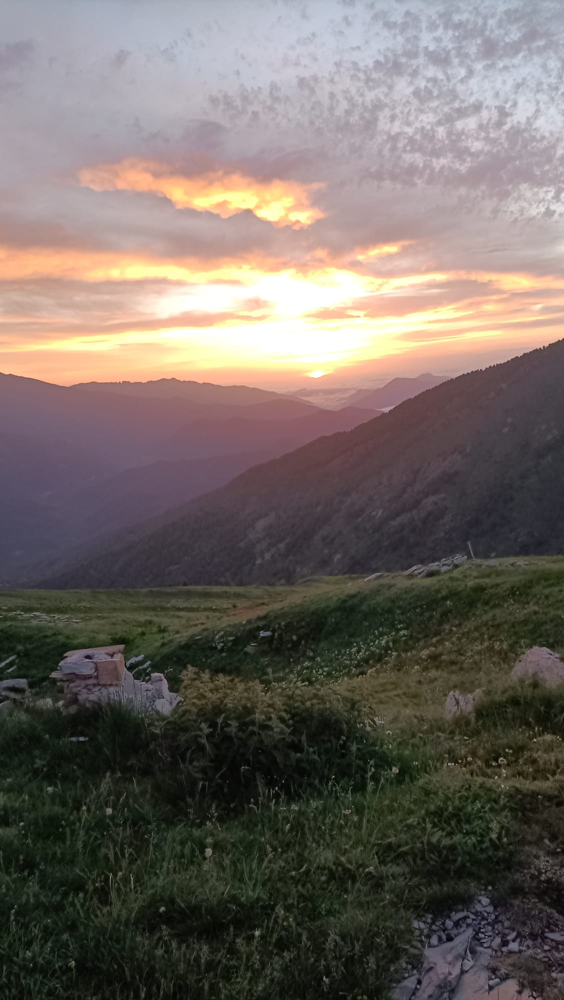
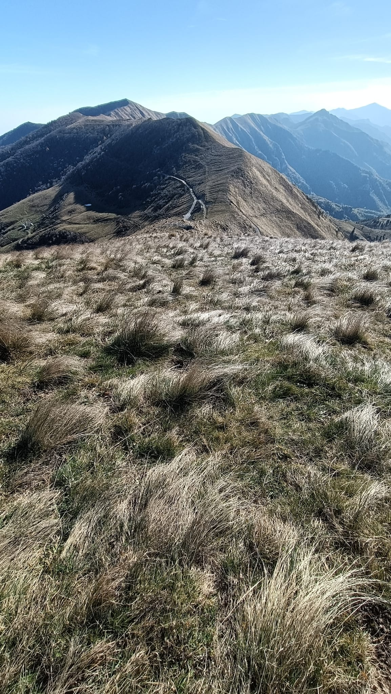

Qualcosa in più su di me
Per sette anni ho lavorato come commessa, a stretto contatto con le persone. Ogni giorno ascoltavo cosa cercavano, cosa le metteva in difficoltà e cosa non riuscivano a dire a parole. Lì ho imparato a mettermi nei panni degli altri e a trasformare ciò che osservavo in soluzioni concrete.
Da quell'esperienza è nata la voglia di fare lo stesso in ambito digitale, dando spazio alla mia creatività. Ho scelto di studiare UX/UI design e oggi progetto interfacce chiare e accessibili, identità visive e siti web.
Credo che un buon progetto nasca dal dialogo: ascolto, propongo e costruisco ogni passo insieme al cliente, per creare esperienze digitali che rendano la vita delle persone più semplice.
I miei valori
Ascolto
Ogni progetto parte da qui: prima di progettare, voglio capire davvero di cosa ha bisogno il cliente.
Empatia
Mi metto nei panni delle persone che useranno ciò che creo, perché un buon design nasce dal capire chi c'è dall'altra parte.
Crescita continua
Sono curiosa e cerco sempre stimoli nuovi: mi piace aggiornarmi e scoprire strumenti diversi, perché nel design non si smette mai di imparare.
Spirito di iniziativa
Di fronte a una novità non resto ferma: se non so come fare qualcosa, ragiono, provo e trovo la soluzione!







I miei interessi
Fuori dallo schermo continuo a creare: l'uncinetto è il mio modo di dare forma alle idee con le mani, con pazienza e attenzione al dettaglio.
Mi nutro di cinema, musica e podcast di storia che alimentano la mia curiosità.
Cerco silenzio e ispirazione nelle escursioni in natura, durante le quali mi fermo volentieri a osservare ciò che mi circonda, animali compresi, e a fotografarlo.
La mia filosofia di design
- Credo che un'interfaccia riuscita sia quella che non ha bisogno di spiegazioni.
- Per me funzionalità ed estetica vanno insieme: un design bello deve anche funzionare.
- Progetto perché tutti possano usare ciò che creo, non solo chi è più esperto.
- Metto al centro le persone che useranno il prodotto, non il mio gusto personale.
- Penso che i risultati migliori nascano dal dialogo con il cliente, un passo alla volta.